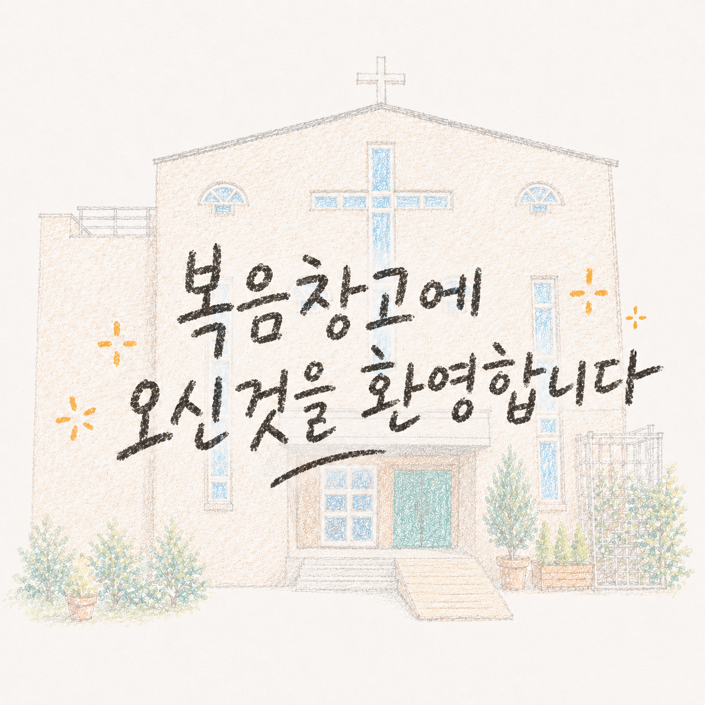

CHURCH INTRO
Jesus All
예수님이면 충분합니다.
“오직 예수, 예수님이면 충분합니다”
라는 고백 앞에 우리의 믿음을
점검하며 나아가는 교회입니다.
COMMUNITY
말씀을 삶으로 살아내기 위해 씨름하며,
하나님께 받은 은혜를 세상에 흘려보내며 살아갑니다.
공동체 전체보기 →
복음을 함께 살아가는 공동체
우리는 날마다 복음이 필요한 사람들입니다.
예배와 기도로 나아가기를 힘쓰고,말씀을 삶으로 살아내기 위해 씨름하며,
하나님께 받은 은혜를 세상에 흘려보내며 살아갑니다.
완벽한 사람들이 아니라,
복음으로 살아가기를
소망하는 사람들이
함께 모여 있습니다.
icon
엔진
청년부
icon
퓨즈
유초등부
LOGO
복음창고교회
GOSPEL STORAGE CHURCH
icon
오일
유아부
icon
기억
중년부
ABOUT US
복음창고교회의
복음창고교회의
의미
창고는 쌓아두는 공간입니다.
복음창고교회는
하나님이 복음을 저장하는 곳이 아니라,
복음을 채우고,
복음을 살아내고,
복음을 흘려보내는 공동체가 되기를
소망합니다.
로고의 의미
icon
십자가
복음의 중심
예수 그리스도
icon
원(순환)
복음의 확장
세상으로 보냄심
LOGO
복음창고교회
GOSPEL STORAGE CHURCH
icon
창고
복음을 품고
세상에 흘려보내는 공간
icon
사람
복음을 살아내는
공동체
예배안내
주 일
주일예배
오전 10:50
유아, 유치부
오전 10:50
아동부
오전 10:50
청소년부
오후 2:00
수요예배
오후 7:30
새벽예배(월-금)
오전 5:30